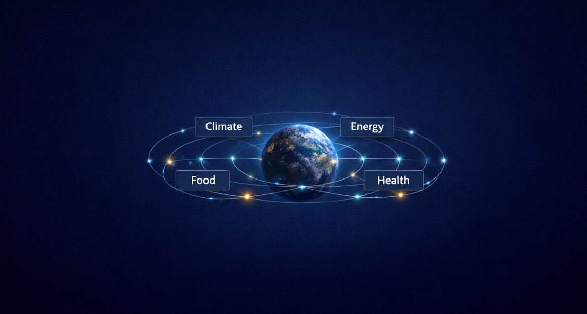
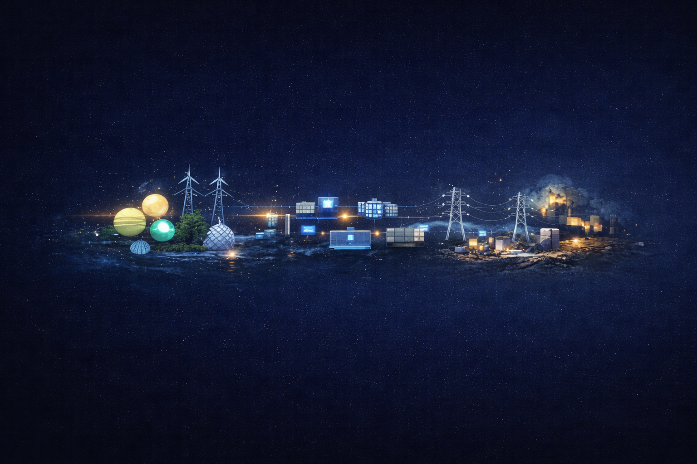
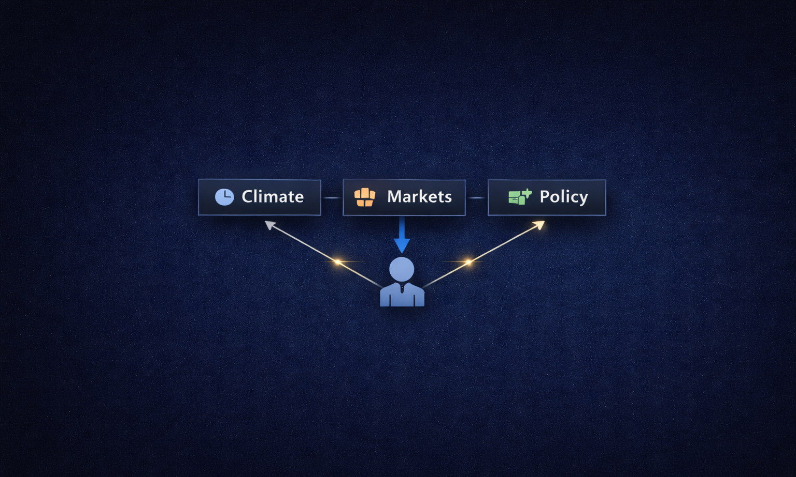

Planetary Systems Are Already Connected
Climate, water, food, energy and health continuously influence one another.
THE CIVILIZATION CHALLENGE
Earth already functions as one connected system, while human intelligence remains fragmented.
Climate, water, food, energy and health continuously influence one another.

Forecasting improves. Outcomes repeat.

Resources exist. Systems do not align.
Data exists. Farmers remain exposed.

Different domains. One underlying problem.
WHERE RAYA BEGINS
One intelligence layer. One connected civilization.
Explore the Vision →